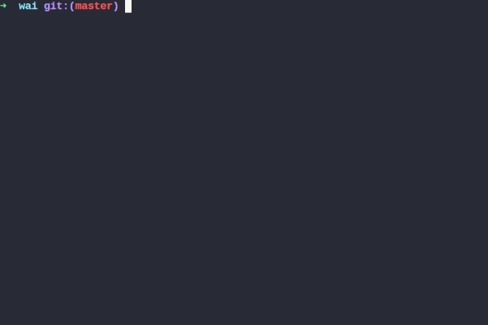

October 26, 2017 - Tagged as: en, haskell.
A GHCi macro is just a function of type String -> IO String. The argument is parameter of the macro, and return value is evaluated by GHCi as a command.
Using this and the process library we can implement a fuzzy module loader that works inside ghci:

(sorry for the gif quality)
Here I’m using fzf as the fuzzy file finder. Code for defining the macro:
import System.IO (withFile, IOMode (WriteMode))
import System.Process (runProcess, waitForProcess)
:{
let loadFuzzy _ = do
let f = "/tmp/fzf_out"
withFile f WriteMode $ \h -> do
p <- runProcess "fzf" [] Nothing Nothing Nothing (Just h) Nothing
_ <- waitForProcess p
out <- readFile f
return (":load " ++ init out)
:}
:def l loadFuzzyAdd this code to your global ghci config file (~/.ghci) or your project-wide .ghci (at the project root).
Only problem here is the process dependency: when you use stack repl or cabal repl, process won’t be importable in GHCi unless the project you’re loading into GHCi already has it as a dependency. One solution is to pass -package process to cabal repl or --ghci-options="-package process" to stack repl. Because process is distributed with GHC this will always work.